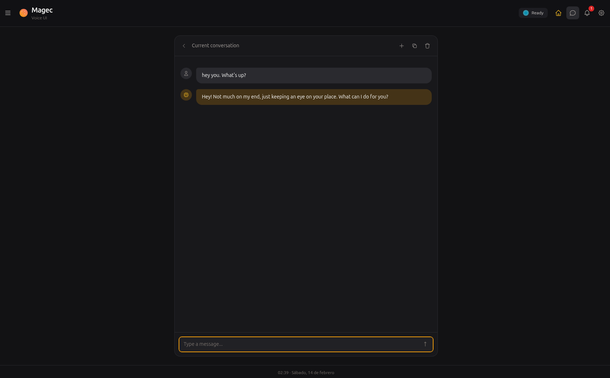
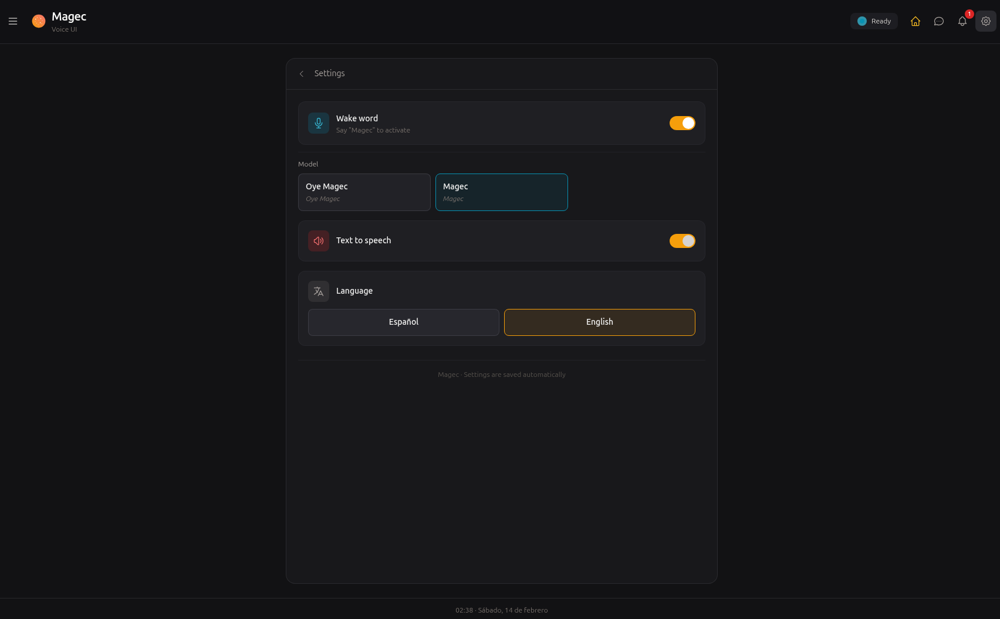
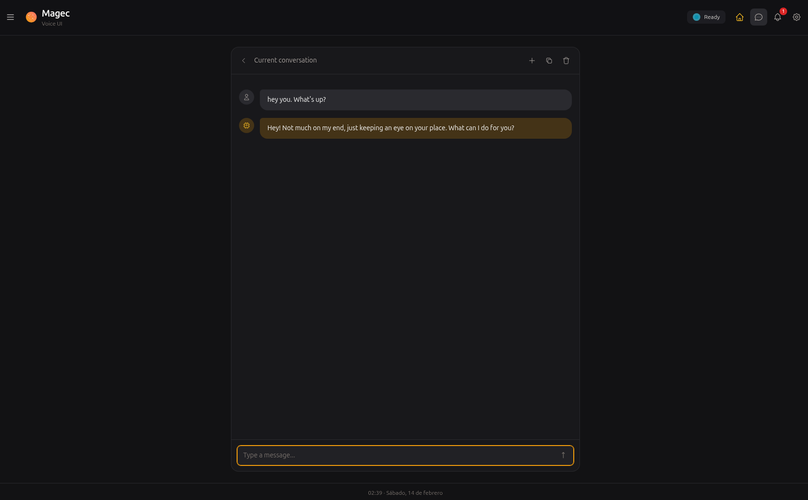
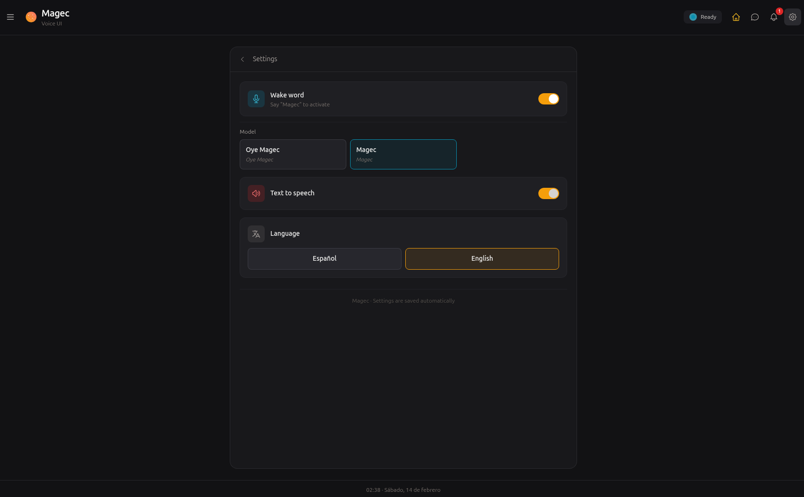

Your AI agents,
your rules.
Create AI agents that think, remember, speak, and use tools. Chain them into teams that work together. Talk to them, text them, automate them. Everything runs on your server.
$ curl -fsSL https://magec.dev/install | bash
# Or bring your cloud provider
$ ... | bash -s -- --openai
$ ... | bash -s -- --anthropic
$ ... | bash -s -- --gemini
# Admin panel → localhost:8081
# Voice interface → localhost:8080
An AI platform that lives on your server
Magec lets you create AI agents — each with its own brain (LLM), personality (system prompt), memory, voice, and tools. You decide which model powers each agent, what tools it can access, and how it behaves.
Agents can work alone or in teams. Chain them into workflows where one writes, another reviews, another fact-checks. Build pipelines of 2 agents or 20 — the visual editor handles both.
Then connect them to the real world. Talk to them with your voice. Chat on Telegram. Trigger them from webhooks. Schedule them with cron. Every agent is reachable from any channel you configure.
Everything runs on your hardware. Your data never leaves your network unless you choose a cloud LLM provider. Even then, the rest of the platform — memory, tools, voice processing — stays local.
Real examples, not buzzwords
Smart home with natural language
Connect Home Assistant via MCP. Ask "turn off the living room lights" from your voice tablet, Telegram, or a cron job that dims everything at midnight.
Software factory
13 agents in a pipeline: product manager → architect → developers → QA → documentation. Feed it a feature request, get back a complete technical spec with code.
Voice assistant for your business
Put a tablet at the front desk. Staff speaks, the agent listens, checks inventory via MCP, and answers — hands-free. Each agent has its own voice.
Automated reports
A cron job fires every morning. An agent queries your database, another writes the summary, a third formats it. The result lands in your inbox via webhook.
Research pipeline
Two researchers work in parallel, a critic reviews their output, a fact-checker verifies claims, a synthesizer produces the final report. All from a single prompt.
Whatever you connect
MCP gives your agents access to hundreds of tools — GitHub, databases, file systems, APIs. The more tools you connect, the more your agents can do.
What's inside
Agents
Each agent has its own LLM, system prompt, memory, voice, and tools. Create as many as you need. Changes take effect instantly — no restarts.
Flows
Chain agents into workflows. Sequential, parallel, loops, nested. Build them visually with drag-and-drop or define them as JSON.
AI Backends
OpenAI, Anthropic, Google Gemini, Ollama. Mix cloud and local models. One agent can use GPT-4, another can use a local Qwen — in the same flow.
MCP Tools
Connect external tools via Model Context Protocol. Home Assistant, GitHub, databases, file systems — hundreds of integrations, growing every day.
Memory
Session memory keeps conversation history in Redis. Long-term memory stores facts about you in PostgreSQL with semantic search. Your agents remember.
Voice
Wake word detection, voice activity detection, speech-to-text, text-to-speech. All processed server-side via ONNX Runtime. Each agent can have its own voice.
How it all connects
Clients on the left, AI backends on the right, Magec orchestrating in the middle. Every connection is configurable.
Manage everything visually
No config files to edit. Create agents, design flows, connect tools, manage clients — all from your browser.


Talk to your agents
Say "Oye Magec" or tap to talk. Switch between agents and flows. Choose who speaks when a team responds. Install it on your phone like a native app.
 



Reach your agents from anywhere
Every client gets its own token, its own set of allowed agents, and its own way of connecting. Add as many as you need.
Browser-based voice interface with wake word, push-to-talk, agent switching, conversation history. Installable as PWA.
Visual management panel. Create agents, design flows, connect tools, manage clients. Keyboard shortcuts, search palette, live health checks.
Text or voice messages. Multiple response modes (text, voice, mirror, both). Per-chat agent switching.
HTTP endpoints for external integrations. Fixed command or passthrough mode. Wire them to CI, forms, alerts, or any system.
Scheduled tasks. Daily summaries, periodic checks, automated maintenance. Standard cron syntax plus shorthands like @daily.
Full API with Swagger docs on both ports. Build any custom integration you can imagine.
On the way.
On the way.
Bring any model
Each agent picks its own backend. Mix a cloud model for complex reasoning with a local model for fast tasks — in the same flow.
Why "Magec"?
Magec (/maˈxek/) was the god of the Sun worshipped by the Guanches, the aboriginal Berber inhabitants of Tenerife in the Canary Islands. The name honors this Canarian heritage while reflecting the project's purpose: to illuminate and assist.